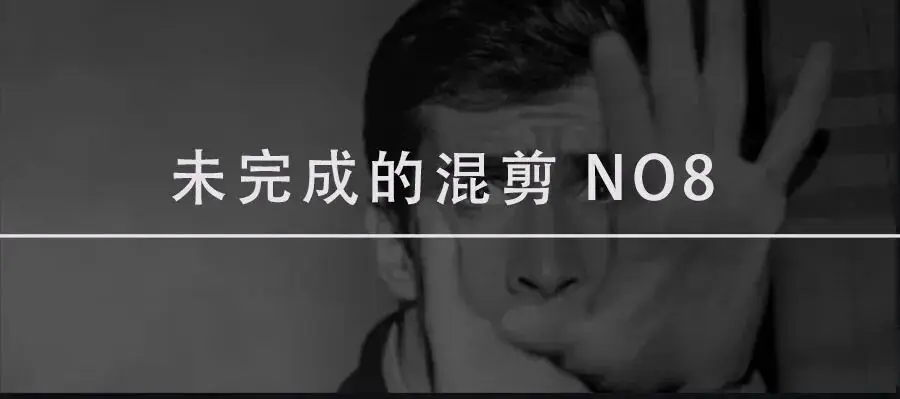
作者：献刀 李大虾
有一个人。
被炮弹轰成了两半。
奇迹的是，这两半各自活了下来。
一个承袭了他全部的恶，心中充满了凶杀、恐怖和邪恶。
另一个则承袭了他全部的善，如同圣徒般充满了慈爱和怜悯。
当恶人回到家乡后，先是气死了自己的父亲，之后还将善良的奶妈送到了麻风病人的聚集地。
他每天东游西荡，以作恶为乐，到处诱骗残害他人，践踏别人的劳动成果。
甚至，他让木匠制造各种残酷的刑具，以折磨犯人。
总之，这个恶人成为了人人敢怒不敢言的恶魔。
不久之后，另一个好人回到了家乡。
恶人破坏的东西，他竭力修复。
知道奶妈被送去了麻风病人的聚集地，他就想方设法去治疗这些麻风病人的疾病。
他还找到制造刑具的木匠，劝说他制造造福于民的器具。
这个好人，起初让大家非常敬爱。
可渐渐地，大家发现他一样给大家带来了很多灾难。
例如好人劝导种庄稼的胡格诺教徒们降低粮食价格，以便让更多穷人有饭吃。
然而胡格诺教徒们自己也深陷贫穷之中，每人一天只能吃一个面包，起早贪黑经营的庄稼是他们唯一的经济来源。
甚至胡格诺教徒们不得不在晚上轮流把守粮仓，因为好人为了迫使他们降价，常常偷偷去清查他们还剩多少粮食，四处宣扬，破坏他们的生意。
又如恶人命令巡警们除掉好人，但巡警们出于仁慈没有下手，相反劝说好人取代恶人来治理当地。
好人拒绝了巡警的邀请，未能完成任务的巡警们回去以后，被恶人统统绞杀。
好人虽好，他所倡导和践行的东西也非常美好，可他却非常的迂腐和没有原则。
就这样，当地被这个坏人和好人折磨的够呛。
终于，好人和坏人碰面了，他们因为价值观不同决定进行一场决斗。
可这场决战，却让他们再次合并成一个人。
再一次，他变成从前一样沉默。
他像是一个局外人一样，身边人的苦难，他看不到。
他内心里的恶，别人也难以察觉。
他不再善恶分明，不再明确地表达立场和采取行动，他看起来更加混沌和冷漠。
可小镇，却恢复了从前的平静.......
这就是卡尔维诺著名的的《分成两半的子爵》，这部寓言式的作品表达了两个人生真相。
第一个是：我们或多或少都生活在分裂和矛盾中。
在父母面前，你是乖巧，可在某些时候，你又会很叛逆。
在孩子面前，你是威严和责任，可在公司领导面前，你又会变得不那么有主见，甚至会变得唯唯诺诺。
在爱人面前，你闪耀着爱，可在另一个人面前，你却面如死灰。
在某些场合，你高谈阔论，可在另一个场合你却变得沉默寡言。
社会和生活的复杂性，让我们学会了在不同的时空表现不同的自我。
再加上自己内心中理想与现实、崇高与肉欲的矛盾，更加剧了这种割裂。
我们经常嘲笑某些组织，里一套外一套，到头来，我们会发现自己也会如此割裂。
而历史便是在这种从个体到集体的普遍割裂中演进。
第二个真相便是，当某一种人格走向极端的时候，比如仇恨到难以抑制、奴性至长跪不起、伪善至难以自我察觉，这些便是灾难的开始。
今天，我们就一起盘点电影中的那些多重人格和精神分裂，那里不仅有我们的影子，还有我们随时可能跌入的深渊。
-17- 一个头，两个大
这是金•凯瑞的一部喜剧片。
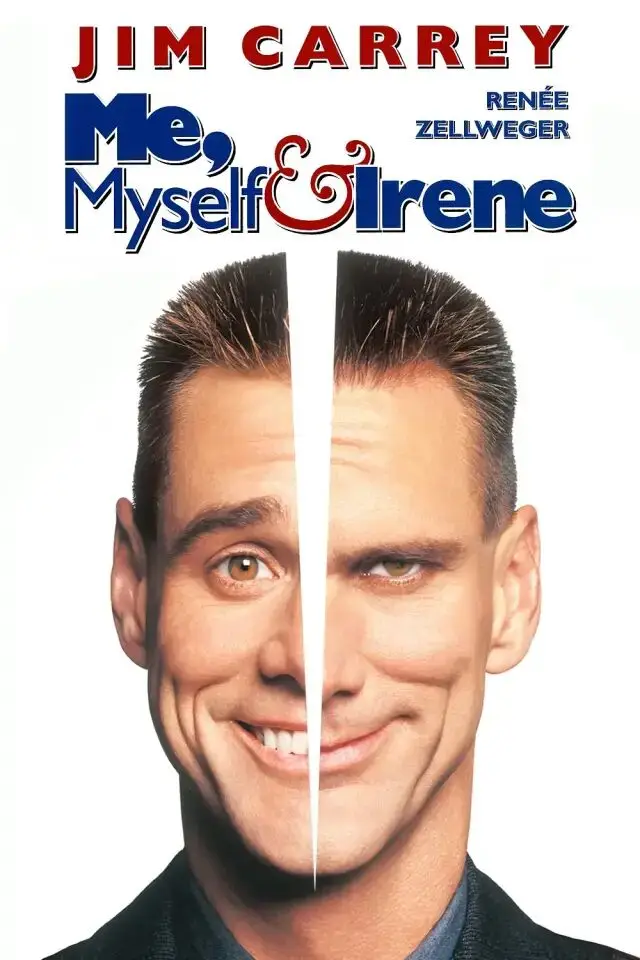
男主心底善良，却遭到妻子的背叛。
他和妻子都是白人，可妻子却给他生下了三个黑皮肤孩子。
善良的男主却将孩子视如己出。
一时，男主成为了小镇上的笑话。
男主依旧微笑面对，可平静的外表下，男主一直压抑着内心的委屈和愤怒。
终于，有一天，男主再也无法忍受，他不为人知的另一面展现在大家的面前。
他是那样的暴躁易怒，又是那样敏感脆弱。
他是在大家的冷嘲热讽中一点点长大的。
-16- 捉迷藏
这是由罗伯特·德尼罗主演的犯罪片。
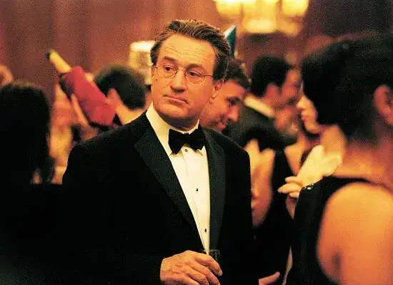
男主是一个占有欲极强的人。
在一次宴会中发现妻子出轨的事实，愤怒冲昏了他的头脑，他将妻子杀死，并将尸体放置在浴缸中，伪装出妻子自杀的情况。
可即使这样，男主依旧难以面对妻子的背叛。
在不断的自我欺骗下，男主真的以为妻子出轨只不过是自己的一个梦，自己更不可能杀死自己的妻子。
男主真的以为妻子是自杀而亡。
就这样，男主带着女儿相依为命，为了重新开始，他们搬去了一个新的地方。
诡异的是，新的地方不断发生命案和恐怖之事，而这些事似乎都与女儿新认识的朋友查理有关。
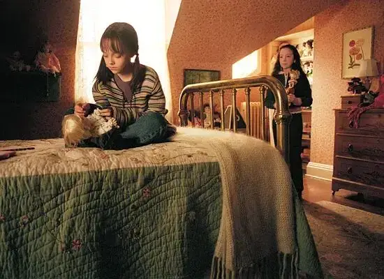
原来，并没有什么查理，而是男主在精神分裂中用同样的手法，一次次地杀死了背叛自己的“妻子”。
而当午夜回来后，男主又变成了那个慈爱的父亲。
我们郁积于胸、执念不忘却又难以真正面对的事情，就像是某种病毒，若不能见光便不能杀死，并终将会把我们的人格扭曲。
-15- 布鲁克斯先生
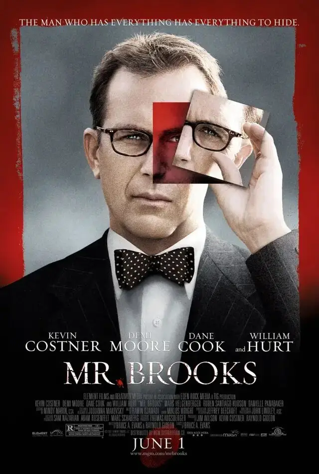
有些时候，我们会发脾气：去死吧。
只是一句话，可背后，我们已经动了杀念。
人类的欲望有很多，而杀戮是我们一直不愿意面对但又不得不承认的一种欲望，要不然也不会有那么多人专门去残害小动物。
布鲁克斯便是其中一员。
他是上流人士，有着幸福的家庭，甚至他还会做慈善去帮助别人，言谈举止都非常儒雅。
可就这是这么一个人，在晚上却有着人所未知的一面，他竟以杀人为乐，晚上他总是放任自己的另一面去杀戮。
布鲁克斯自己也知道这样是不对的，他甚至还会为此祷告，并且每次都告诉自己这是最后一次了。
可一次过后，还有另外一次。
就像保罗所言：立志行善由得我，行出来却由不得我。
布鲁克斯深陷罪中难以自拔，终遭到上帝的惩罚，他的女儿在学校也杀了人，就像亚当夏娃接连犯罪一样，他的女儿也陷入到罪恶的泥潭中。
罪的工价乃是死，恶的一面一旦脱缰，带来的必定是毁灭和刑罚。
-14- 东邪西毒
《东邪西毒》中雌雄同体的慕容嫣让很多人难以忘记。

慕容嫣爱上了黄药师，可黄药师并不喜欢慕容嫣，并且爽约早已约定好的见面。
这让慕容嫣对黄药师又爱又恨以至于精神分裂。
恨黄药师的时候，她便是英气狠辣的慕容燕，他请欧阳锋杀黄药师，理由是欧阳锋辜负了自己的妹妹慕容嫣。

爱黄药师的时候，她便是痴情真意的慕容嫣，她请欧阳锋杀掉自己的哥哥慕容燕，因为哥哥阻止她和黄药师在一起。
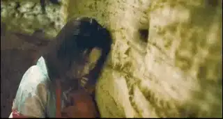
就像欧阳锋所言：一个人受了挫折，或多或少总会找个借口掩饰自己，其实慕容嫣、慕容燕只是一个人的两个身份，在这两个身份后面藏着一个受了伤的人。
当我们难以面对失去时，我们的精神便会为这种失去寻找另一种形式的出口。

-13- 三面夏娃
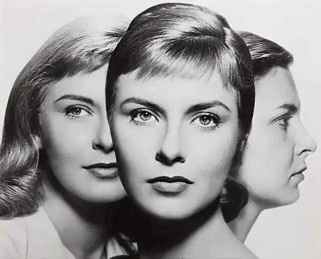
这是1957年的奥斯卡获奖作品，根据真实故事改编。
女主是一名家庭主妇，她对丈夫唯命是从，想要做一个贤妻良母。
可她却有些举止异常，经常莫名其妙地做一些东西，可事后却完全忘记。
比如，她总是夜晚特定的时刻，自称另一个女人的名字，然后穿着时髦出入酒吧歌厅，而且言谈举止非常轻佻。
渐渐地，他们的家庭变得矛盾重重，甚至女主丈夫选择与其离婚。
无奈之下，她只能求助一名医生的治疗。
通过治疗，医生发现女主的异常与她小时候的一件事有关。
是她6岁时，在祖母的葬礼上，母亲强制要求她亲吻祖母的遗容。
这种强迫行为给女主留下了很深的心里隐隐，婚后，丈夫的强势和压迫，重新唤醒了她内心的不安全感和反抗。
所以，她出现了第二个人格，与大家普遍希望的贤妻良母完全相反，像是一个荡妇。
在医生的悉心治疗之下，他们发现女主还有第三个人格，这个人格自主独立、不卑不亢，是女主内心真正渴望的。
这部深刻地揭露了现代女性的精神压力，也表达了现代女性的心声，在作为妻子、女人、母亲等多重女性角色上，我们需要多多聆听和尊重她们的声音。
-12- 精神分裂症
这是第61届戛纳电影节柯达获奖短片，我也曾经向大家推荐过。
150顿的陨石从天而降，砸中了亨利家对面楼上的天线。

接着，奇怪的事情发生了，因此这场撞击，亨利的世界与真实的世界偏离了91cm。
也就是说，他必须要站在距离电话91cm的位置才能拿到电话。

坐椅子也只能在坐在偏离椅子91cm的位置

这种偏差，让他迥异于平常的世界。
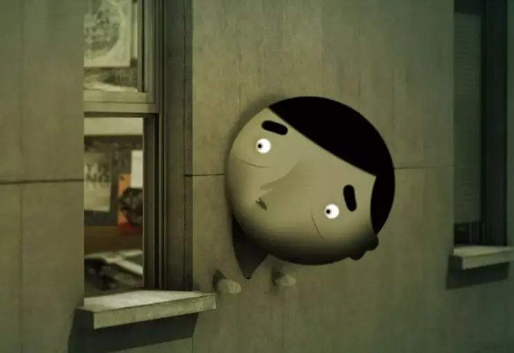
亨利因此丢掉了工作。
大家也难以理解他的这种感受，亨利变得越来越孤独......
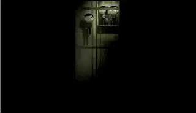
这部短片很有意思，将那种精神分裂后的错乱感以及人与人之间难以理解的孤独具象化。
91公分。
仅仅91公分便可以让你与正常的世界割裂，便可以让你成为永远的局外人。

-11- 惊魂记
这是希区柯克非常著名的一部悬疑片。
可以说是精神分裂犯罪片的鼻祖。
女主到一个汽车旅馆投宿惨遭杀害。
而凶杀既是一个看上去很友好很健谈的人。
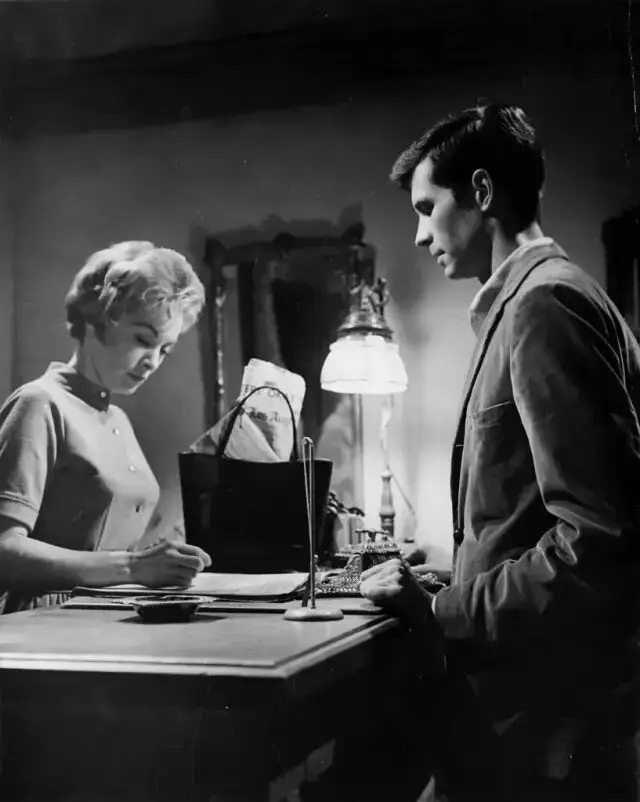
又是一个对母亲话语唯命是从的儿子。
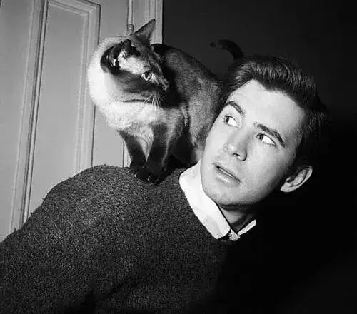
他一面窥探着女主，一面又告诉自己这样是不对的。
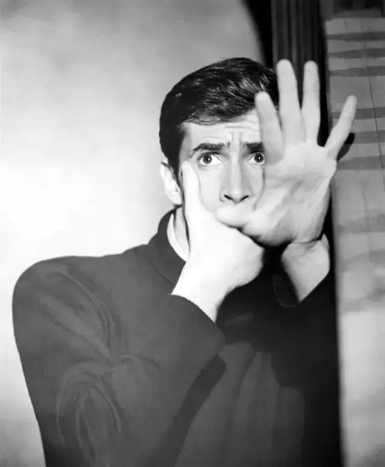
一面杀害了女主，一面又将凶手摔锅给并不存在的母亲。
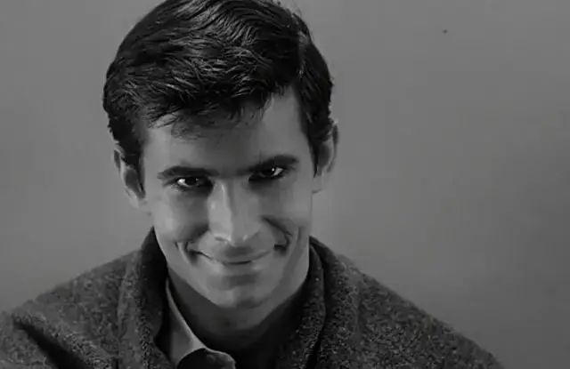
他自己则是为了“母亲”不得不去掩盖命案的乖儿子。
所谓的变态，就是在自己分裂的精神中，说服自己既是凶手，又是无辜的受害者。
-10- 无间道3
《无间道》中，作为卧底，梁朝伟饰演的陈永仁和刘德华饰演的刘建明都生活在充满割裂的生活中。
陈永仁是个充满正义感的警察，但是为了完成任务，他不得不做坏事，以混入黑社会的圈子里。
而刘建明则为了服务好黑暗势力，他必须表面上过着光明的生活，内心中却不得不时常想着邪恶的事情。
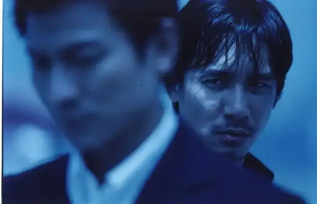
他们的生活过的都非常煎熬。
可陈永仁和刘建明谁的内心更加煎熬呢。
我的答案是刘建明，因为陈永仁虽然做了很多坏事，但是他内心坦荡，他是打入黑暗世界的光明使者。
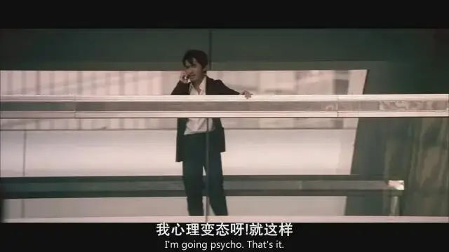
但对于刘建明而言，他像是潜入光明世界的魔鬼，他虽然过着幸福的生活，但是他的出生以及他过去犯下的滔天大罪让他从未拥有这样的幸福。
而对于心里还有良知的人来说，不得已的伪善简直是一种折磨。
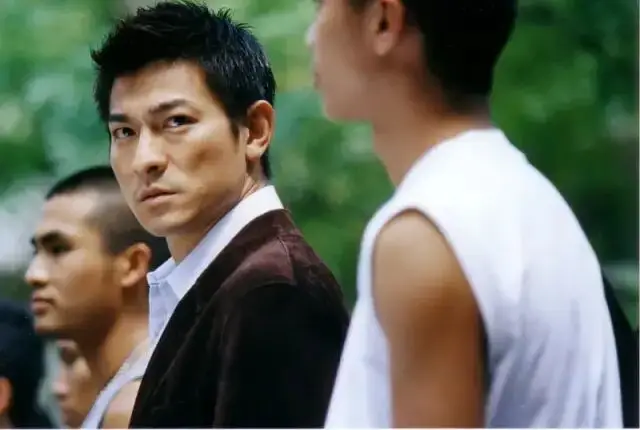
所以，从进入警察学校时，看着转身离开的陈永仁，刘建明就无奈的说“我想跟他换啊”。
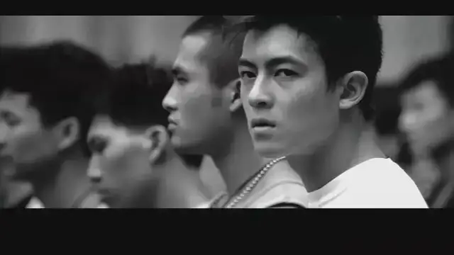
所以，当陈永仁被害死后，刘建明内心非常痛苦，他想要忏悔，并将自己洗白。
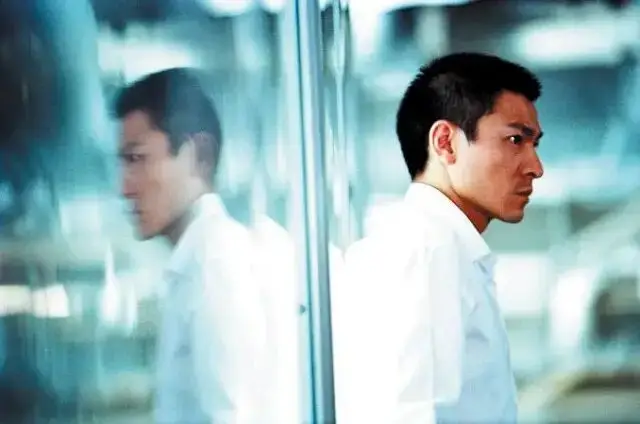
第三部中，要从泥潭和白骨中将自己洗白成一个好人，刘建明陷入到巨大的精神煎熬中，并且人格分裂。
向善的人格，在竭力补救过去和抓内鬼。
而恶的一面，则在继续着杀戮。
可无辜人的血已经流出，刘建明终究还是要负上代价。
到最后，刘建明只能在悲愤中不停地问：为什么不给我机会，我只不过想做个好人！
-09- 双重人格
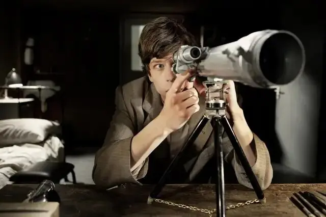
一次，男主拿着望远镜在窥看自己喜欢的女孩，可忽然他发现有一个和自己一摸一样的人。
虽然长相相同，但是另一个人更加幽默、风趣、健谈，所以也更受欢迎。
相比之下，自己则更多是木纳、紧张、忧郁。
这就是别人眼中的自己和真实的自己。
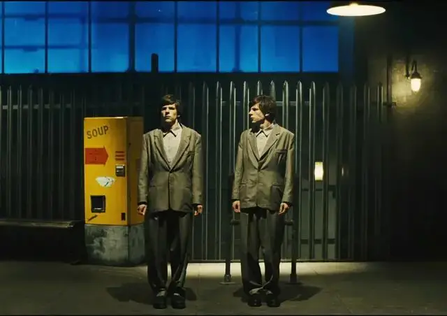
对方喜欢的你只能是对方眼中的你，这是一个我们难以反抗的标贴。
而那个脆弱、孤独、不那么可爱的一面只能自己享用。
所以，男主说自己是个幽灵。
这是一句非常孤独的话。
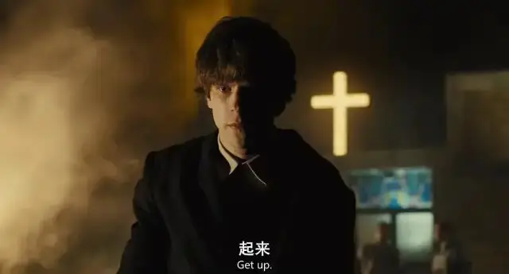
-08- 机械师
男主开车肇事，意外撞死一个小男孩，可他却选择逃逸。
他难以面对自己犯下的罪恶，所以夜夜失眠，身体日渐消瘦。
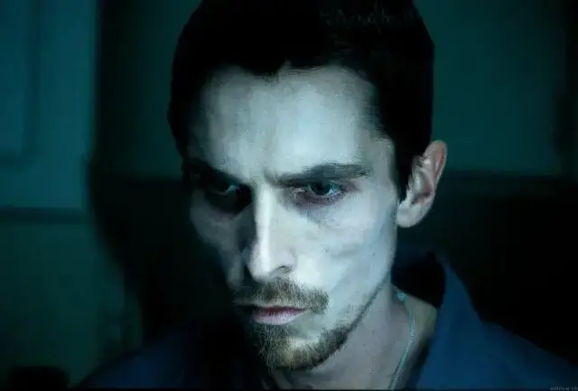
最终，男主的精神在内疚和挣扎中分裂。
生命中有一种不堪负荷的缠累，就是罪。
如果不愿意去承认和坦白，罪会把我们吞噬。
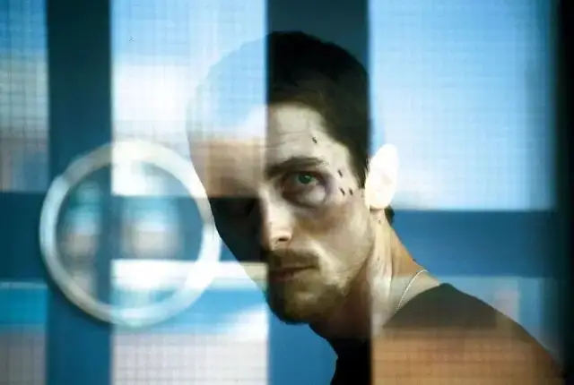
-07- 美丽心灵
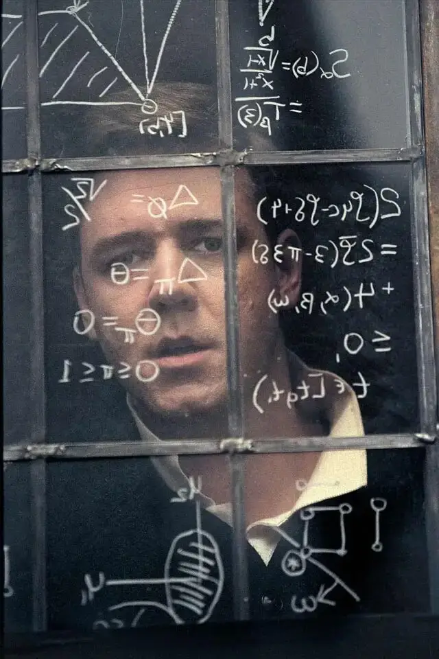
伟大数学家、诺贝尔得主纳什，是一个天才。
可伴随天才的还有精神分类的困扰。
对于纳什，让人惊叹的不仅是他取得的伟大成就，更在于他在幻觉和梦中找到了真实和力量。
-06- 禁闭岛
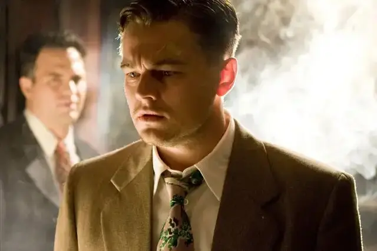
主人公经历了残酷的二战，战争结束后，他换上严重的精神疾病，并陷入到酗酒的泥潭中。
妻子也患有严重的抑郁症，夫妻二人有三个孩子。
这样的家庭下，丈夫没有能力爱妻子，原本抑郁的妻子变得更加恶化。
最终，妻子溺死了三个孩子，丈夫杀死了妻子。
残酷的事实面前，这个丈夫陷入到更加严重的精神分裂。
他在一次又一次的幻想中扭曲自己，以另一种方式去面对残酷的现实和自我良心的不安。
人到底该作为一个恶魔活着，还是作为一个好人死去？
那个更好？
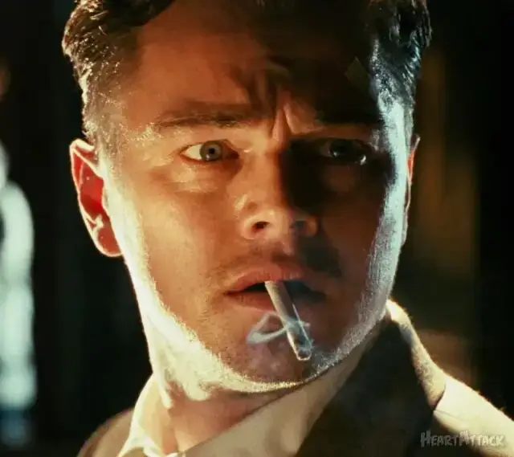
-05- 神探
这是杜琪峰的一部佳作。
在利益攸关以及生死之间的抉择上，我们的内心会非常犹豫不决。
我们想要面对真相，却又经常懦弱。
想要自律己身，却控制不住自己的嘴巴。
想要坦坦荡荡，却不由自主地掩藏自己的过时。
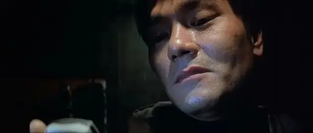
《神探》中一名警察犯了错，被同事发现。
情急之下，他误将同事杀害。
有了罪恶，就有了隐瞒，有了隐瞒，就有了内心的煎熬和挣扎。
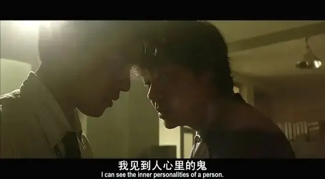
从此，他成为了一个多重人格的人。
在不同的情景之下，贪婪、色欲、暴食、傲慢、嫉妒、愤怒、懒惰会互相博弈，来主导他的人生。
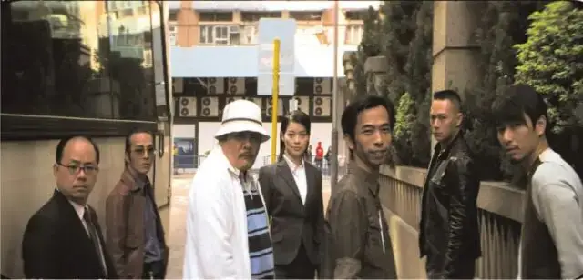
令他痛苦的是，在多重人格下，他再也找不到真正的自我。
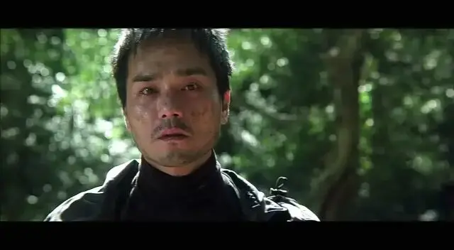
-04- 致命ID
这部电影也像《神探》一样，将人格具象化。
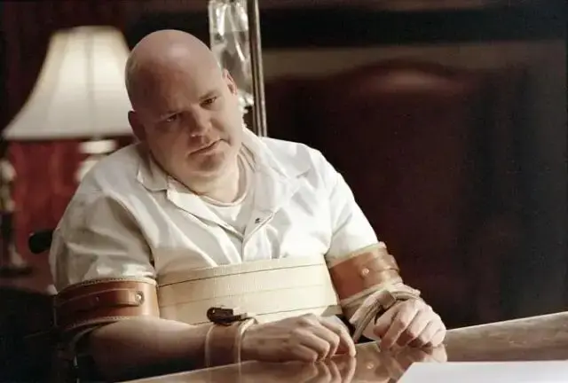
男主是个恐怖的凶手，他有12个人格。
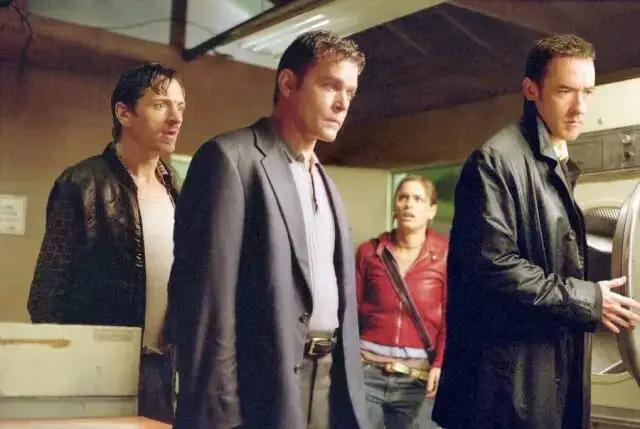
不同于《神探》的是，这些人格并未并存，在主人公的精神世界中，这12个人格变成12个人物置身在一个旅馆中，发生了互相杀害。
最终，那个最凶狠、阴险的人格杀死了其他11个人格，男主也成为了彻底的恶魔。
-03- 黑天鹅
在母亲的细心陪伴下，女主自幼练习芭蕾舞，并拥有非常出色的技艺。
终于，机会来到，纽约剧团在海选《天鹅湖》的领舞。
而艺术总监对领舞的要求非常高，不仅要演绎出白天鹅的端庄和华丽，还要演绎出黑天鹅的魅惑和刚劲。
而女主一直是一个乖乖女，在母亲的高要求下早已习惯压抑自己的脾气。
她演绎的黑天鹅僵硬、胆怯、毫无个性。
她的表现遭到了艺术总监的质疑以及其他芭蕾舞演员的嘲笑。
在巨大的精神压力下，女主的精神开始分裂。
不疯魔不成活。
在痛苦的挣扎中，她终于将内心全部的反抗、欲望和仇恨释放而出。
从内到外，她成为了真正的黑天鹅。
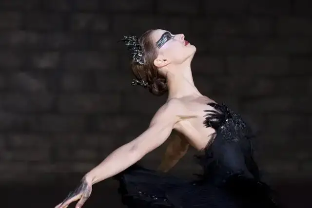
-02- 搏击俱乐部
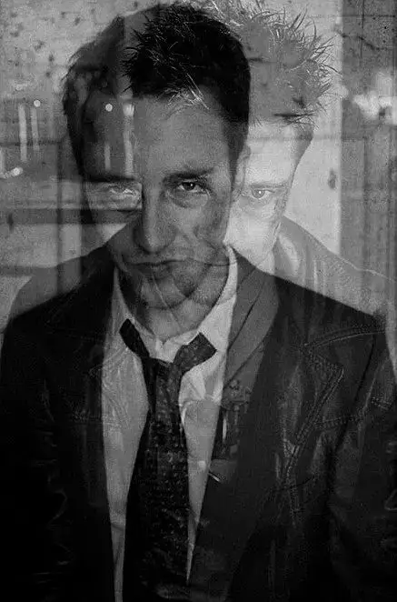
男主是一个处于中年危机的男人。
他过着日复一日单调的生活，他痛恨自己的平庸，但却无能为力。
所以，巨大的焦虑下，他经常失眠。
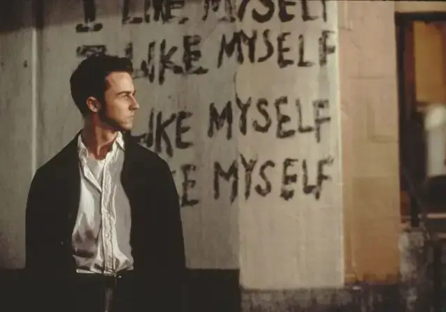
可生活很快发生了变化，他认识了一个很有趣的人，叫泰勒。
两人都对乏味的生活充满了厌恶，所以他们创立搏击俱乐部，让大家不戴护理工具的情况下进行互殴。
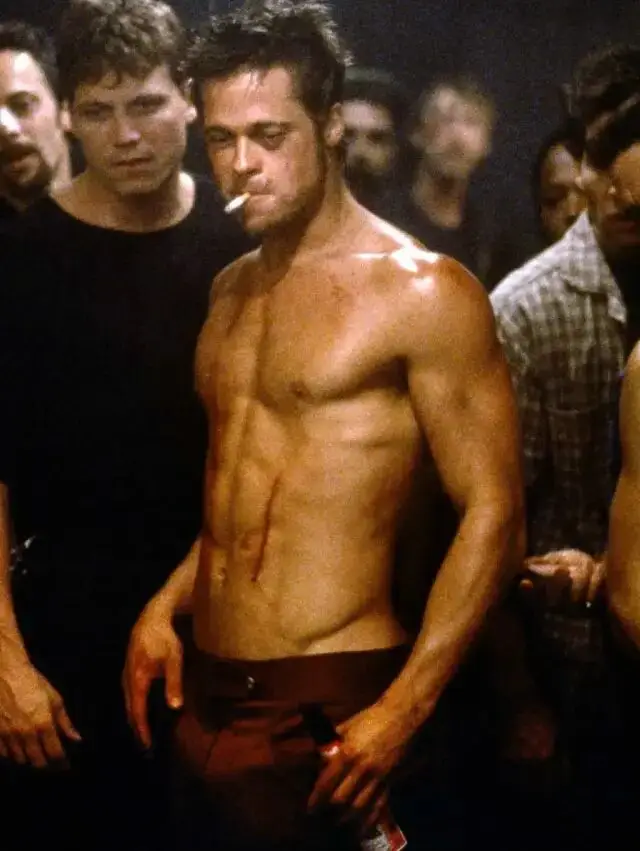
这种暴力行为让很多人的精神压力得以释放，搏击俱乐部很快席卷全国，并发起了暴动。
这种失控是男主始料未及的，他慢慢地想要远离泰勒。
可令他自己意想不到的是，他就是泰勒！
泰勒就是他内心中桀骜不驯的另一个人格。
而搏击俱乐部便表达了身处普遍精神苦闷中人们对现状的控诉和咆哮。
-01- 996、福报、狼文化
这并不是一部电影，但却是压在年轻人心口的一块大石头，所以放在最后压轴。
狼，在传统文化里，一直是一个非常负面的象征符号，比如“狼心狗肺”、“狼子野心”、“白眼狼”…..
但现在很多企业却大肆宣称狼文化，鼓励员工不顾家庭地奋斗，并用利益和欲望来支配员工，搅动员工内心的攀比和贪欲，来让员工甘心放弃生活的平衡。
并自豪地把自己的贪欲当做炫耀的资本。
这种企业文化和价值鼓动，便是将员工贪婪好胜的人格推向极端。
这是一种可怕的恶和灾难，需要我们对此要有足够的认识和反抗。
必要时，需要泰勒们出手教训教训。
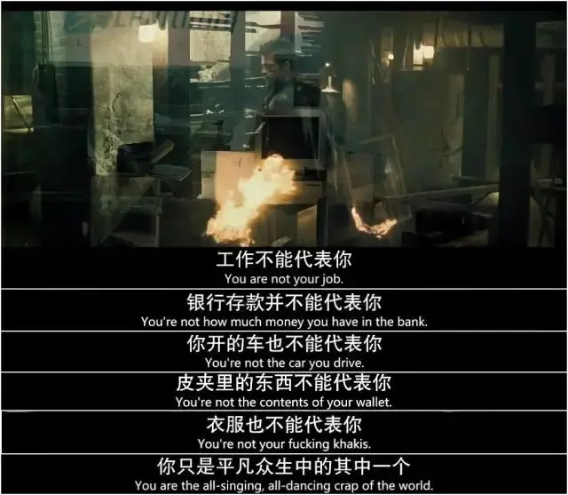
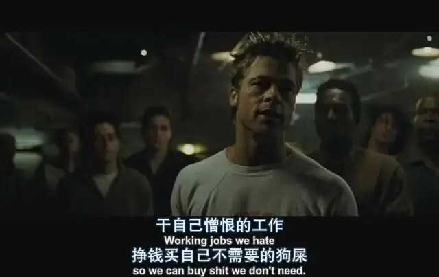
相似推荐
▼
已完成的混剪no 1
已完成的混剪no 2
已完成的混剪no 3
未完成的混剪no 1
未完成的混剪no 2
未完成的混剪no 3
未完成的混剪no 4
未完成的混剪no 5
未完成的混剪no 6
未完成的混剪no 7
这里没有挑逗你眼目情欲的小鲜肉
也没有挑动你肉体情欲的段子
更没有膨胀你今生骄傲的鸡血
我们只在乎那些最质朴真诚的作品
在那里我们才能恢复真正的想象力
我们也坚信这才是我们真正需要的

ID:Six_hundred_hits
长按二维码，一键关注
【六百击】
电影评论
尽情分享朋友圈

微信二维码打赏通道